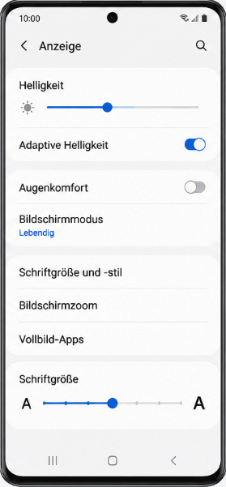
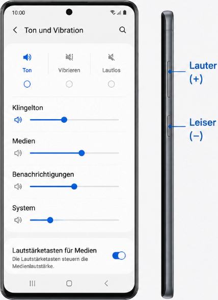
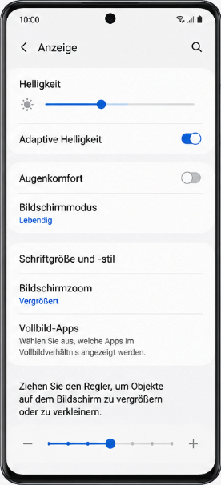

-
Einstellungen App öffnen
Um überhaupt Änderungen am Smartphone vornehmen zu können, muss zuerst die zentrale Schaltzentrale des Geräts geöffnet werden. Diese App steuert alle Funktionen von der Lautstärke bis zur Bildschirmhelligkeit.
iPhone
Auf dem iPhone heißt diese App schlicht und einfach „Einstellungen“. Sie ist leicht an ihrem Symbol zu erkennen: einem grauen, runden Zahnrad, das an eine Maschine erinnert. Tippen Sie einfach einmal kurz auf dieses Symbol.
Android-Geräte
Auch bei Android-Geräten heißt das Programm „Einstellungen“. Das Symbol zeigt ebenfalls ein Zahnrad, welches je nach Hersteller meistens blau, grau oder weiß gestaltet ist. Sollten Sie das Symbol nicht direkt auf dem Bildschirm sehen, können Sie mit dem Finger vom ganz oberen Bildschirmrand nach unten wischen – dort erscheint das Zahnrad meistens als kleines Symbol in der Ecke.
-

Einstellung - Schriftgröße vergrößern
Eine größere Schrift und dickere Buchstaben verhindern, dass die Augen beim Lesen auf dem Bildschirm schnell ermüden.
iPhone
Öffnen Sie die Einstellungen und tippen Sie auf den Punkt „Anzeige & Helligkeit“. Dort finden Sie die Option „Textgröße“, bei der Sie die Schrift mithilfe eines Schiebereglers vergrößern können. Wenn das noch nicht reicht, gehen Sie zurück und wählen Sie „Bedienungshilfen“, danach „Anzeige & Textgröße“ und aktivieren Sie den „Größeren Text“. Mit der Option, „Fetter Text“, können Sie die Lesbarkeit noch weiter verbessern indem alle Buchstaben dicker und kontrastreicher angezeigt werden.
Android-Geräte
Wählen Sie in den Einstellungen den Menüpunkt „Eingabehilfe“ und tippen Sie auf „Verbesserungen der Sichtbarkeit“. Hier finden Sie den Bereich „Schriftgröße und -stil“. Verschieben Sie den blauen Punkt auf der Linie nach rechts, bis der Text für Sie angenehm groß ist. Mit der Option „Schriftart Fett“, können Sie die Lesbarkeit noch weiter verbessern.
-

Einstellungen - Lautsträke regeln
Nun schauen wir noch weiter, dass Sie keinen wichtigen Anruf verpassen!
iPhone
Tippen Sie in den Einstellungen auf „Töne & Haptik“. Unter der Überschrift „Klingel- und Hinweistöne“ sehen Sie einen Balken. Ziehen Sie den Punkt auf diesem Balken nach rechts, um das Telefon lauter zu stellen. Ein wichtiger Tipp für den Alltag: Aktivieren Sie direkt darunter den Schalter „Mit Tasten ändern“. Nun können Sie die Lautstärke jederzeit über die echten, fühlbaren Knöpfe an der linken Außenseite des iPhones lauter und leiser stellen, ohne die App öffnen zu müssen.
Android-Geräte
Suchen Sie in den Einstellungen nach dem Punkt „Töne und Vibration“ und tippen Sie danach auf „Lautstärke“. Hier sehen Sie mehrere Regler nebeneinander: für den Klingelton, für Medien (wie Videos und Musik) und für Benachrichtigungen. Schieben Sie diese blauen Punkte nach rechts, um die gewünschte Lautstärke einzustellen. Über die echten Knöpfe an der meist rechten Gehäuseseite des Handys lässt sich die Lautstärke im Alltag ebenfalls ganz leicht anpassen.
-

Einstellungen - Apps vergrößern
Nicht nur die Schrift lässt sich vergrößern, sondern auch die Symbole wie die unterschiedlichen Apps
iPhone
Das iPhone bietet eine Funktion namens „Anzeigezoom“. Sie finden diese, wenn Sie in den Einstellungen auf „Anzeige & Helligkeit“ tippen und ganz nach unten scrollen. Wählen Sie dort den Punkt „Anzeigezoom“ und stellen Sie diesen von Standard auf „Größerer Text“. Dadurch werden nicht nur die Schriften, sondern alle Knöpfe, Symbole und Nachrichtenschachteln auf dem gesamten Telefon dauerhaft vergrößert dargestellt.
Android-Geräte
Viele Android-Geräte (besonders von Samsung) besitzen einen genialen „Einfachen Modus“. Sie finden ihn in den Einstellungen unter dem Punkt „Anzeige“. Wenn Sie diesen Modus aktivieren, verändert sich der gesamte Startbildschirm: Die App-Symbole werden riesig, die Tastatur bekommt extra starke Kontraste und das System sorgt dafür, dass aus Versehen keine Apps mehr gelöscht oder verschoben werden können.
-
Ein kleines Quiz
Bitte beachten Sie, dass Sie nach jeder beantworteten Frage auf den blauen „Weiter“-Button klicken müssen, um zur nächsten Aufgabe zu gelangen. Bei der Sortier-Aufgabe wählen Sie einfach ein Element aus und ziehen es in einen der zwei Kästen. Sobald Sie alle sechs Elemente richtig einsortiert haben, können Sie Ihr Ergebnis ganz unten überprüfen lassen.